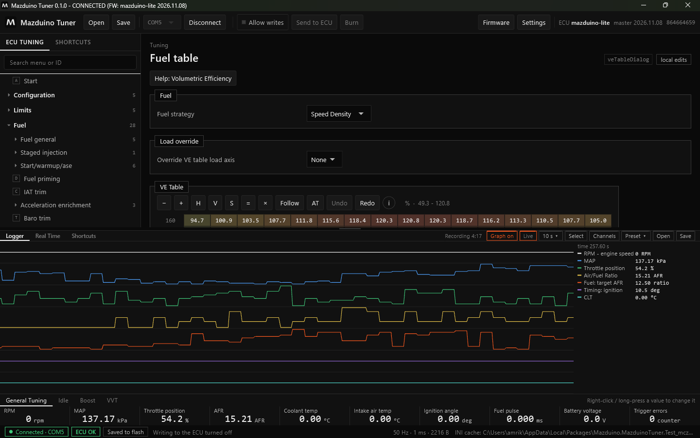
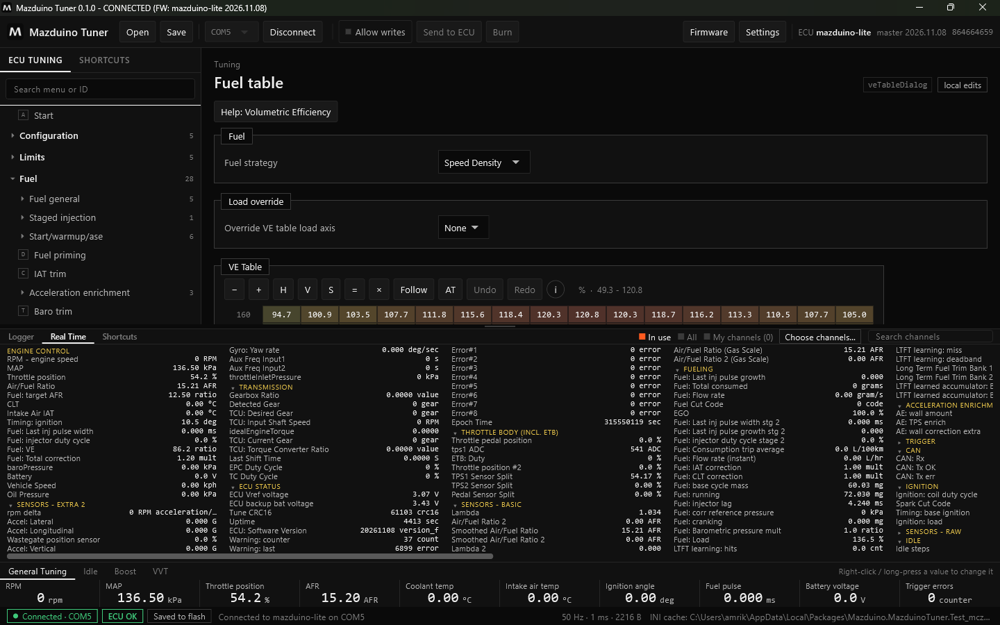
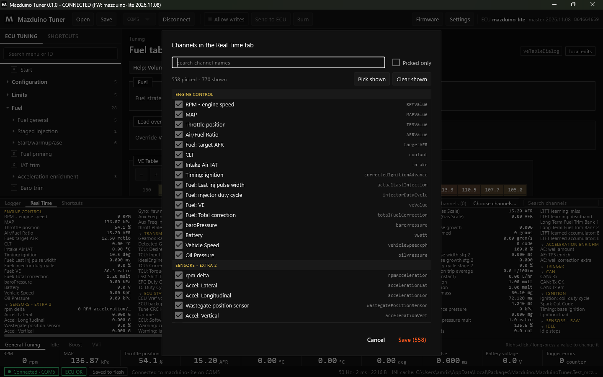
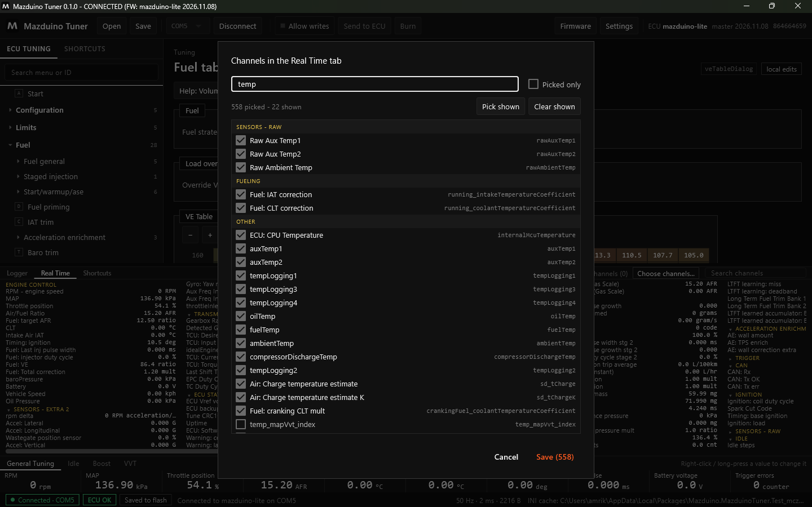
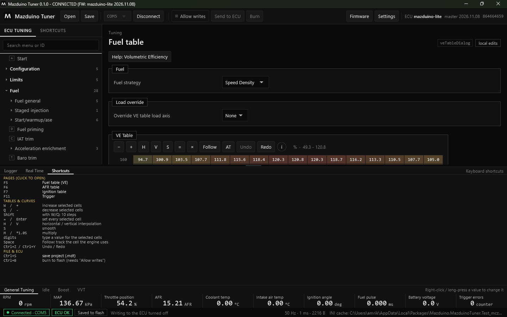

Terakhir diperbarui: 9 November 2026
Logger dan Real Time di Mazduino Tuner¶
Panel bawah Mazduino Tuner berisi tiga tab: Logger, Real Time, dan Shortcuts. Tarik garis pembatas di atas panel untuk mengubah tingginya.
Logger¶
Selama ECU terhubung, semua channel selalu direkam (sekitar 11 menit terakhir pada 50 Hz). Anda tidak perlu menekan tombol rekam.

| Tombol | Fungsi |
|---|---|
| Recording | Lama rekaman yang tersimpan saat ini |
| Graph on / Graph off | Menyalakan atau mematikan grafik live. Mematikan grafik menghemat CPU; perekaman tetap berjalan. |
| Live / Go live | Grafik mengikuti data terbaru. Jika digeser ke belakang, klik Go live untuk kembali. |
| 10 s | Lebar rentang waktu yang terlihat |
| Select | Klik pada grafik memilih rentang waktu (sama dengan Shift+klik), misalnya untuk menyimpan sebagian log |
| Channels | Memilih channel yang digambar |
| Preset | Menyimpan dan memakai kumpulan channel, misalnya "Idle" atau "Dyno" |
| Open | Membuka file log .mlg atau .csv |
| Save | Menyimpan log sebagai .mlg atau .csv |
Di kanan grafik tertulis nilai setiap channel pada posisi kursor.
Simpan otomatis: aktifkan Save when disconnecting di Settings. Log yang lebih dari 30 detik
disimpan saat disconnect, di folder Logs di samping proyek .mdt, atau di
Documents\Mazduino Tuner\Logs\<nama kendaraan>. Di samping setiap log juga tersimpan tune yang
dipakai ECU saat log direkam (.mdt).
Real Time¶
Tab Real Time menampilkan nilai live dari channel ECU dalam kolom-kolom, dikelompokkan seperti dashboard. Grup Engine Control (RPM, MAP, TPS, AFR, suhu, timing, injektor) selalu di depan.

- Klik judul grup untuk membuka atau menutupnya.
- Scroll mouse menggeser kolom ke samping.
- Arahkan kursor ke nama channel untuk melihat nama aslinya.
Memilih Channel yang Ditampilkan¶
Di kanan atas tab ada tiga pilihan:
| Pilihan | Yang ditampilkan |
|---|---|
| In use | Hanya channel dari fitur yang dipakai ECU (default) |
| All | Semua channel |
| My channels | Hanya channel pilihan Anda |
Klik Choose channels... untuk memilih channel sendiri:

-
Ketik di kotak pencarian untuk menyaring, misalnya
temp:
-
Centang atau hilangkan centang per channel.
- Pick shown / Clear shown mencentang atau menghapus semua channel yang sedang tampil.
- Picked only menampilkan hanya channel yang sudah dicentang.
- Save menyimpan pilihan dan beralih ke My channels.
Kotak Search channels di kanan atas tab Real Time menyaring kolom secara langsung.
Shortcuts¶
Tab Shortcuts berisi daftar tombol keyboard. Klik baris halaman untuk langsung membukanya.

| Tombol | Fungsi |
|---|---|
| F5 / F6 / F7 / F11 (bawaan) | Fuel table (VE) / tabel target AFR / Ignition table / Trigger. Bisa diganti dan ditambah (F2 sampai F12) lewat klik kanan halaman di menu. |
| W atau + / Q atau − | Naikkan / turunkan sel terpilih (Shift: 10 langkah) |
| = atau Enter | Isi semua sel terpilih |
| H / V | Interpolasi horizontal / vertikal |
| S | Smooth |
M atau *1.05 |
Kalikan |
| angka | Ketik nilai untuk sel terpilih |
| Space | Follow: ikuti sel yang dipakai mesin |
| Ctrl+Z / Ctrl+Y | Undo / Redo |
| Ctrl+S | Simpan proyek .mdt |
| Ctrl+B | Burn ke flash (perlu Allow writes) |
Nilai Utama¶
Baris nilai di bawah panel (RPM, MAP, Throttle position, AFR, Coolant temp, dan lainnya) selalu terlihat. Gunakan tab General Tuning, Idle, Boost, VVT untuk set nilai lain. Klik kanan (atau tekan lama) sebuah nilai untuk menggantinya dengan channel lain.